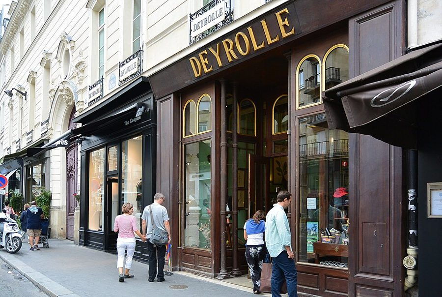
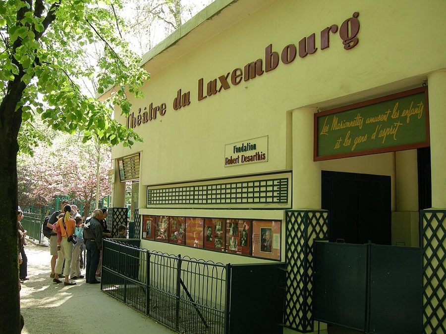
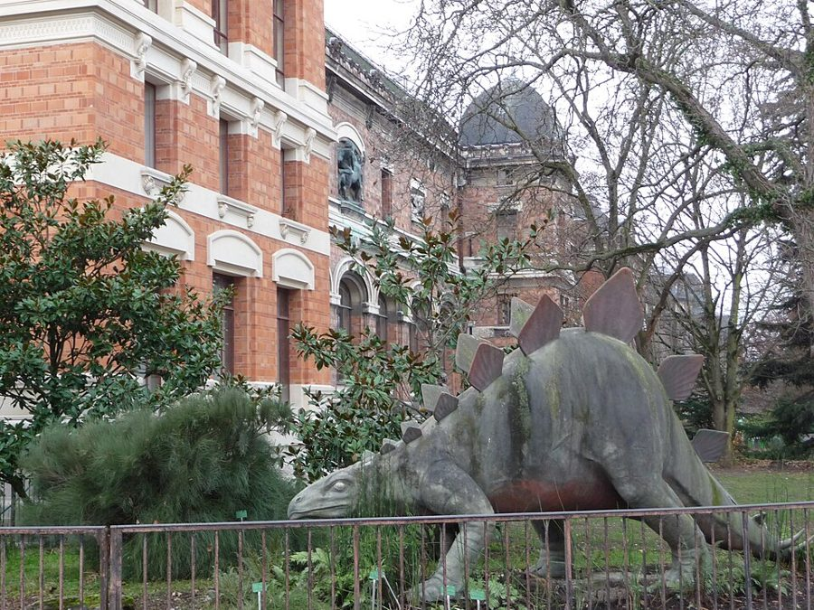
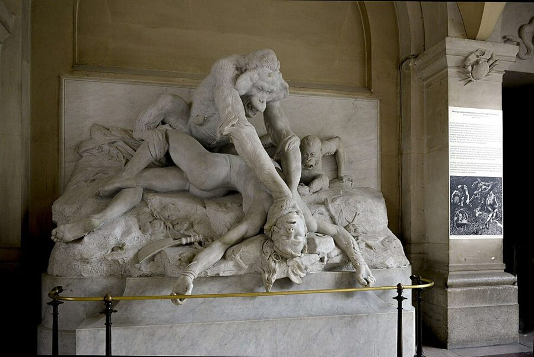
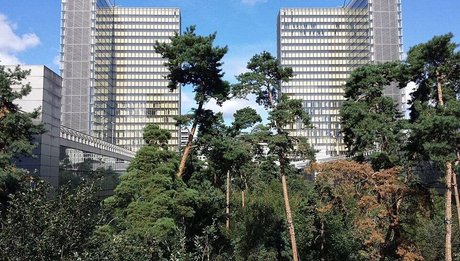

这一篇在做什么
这是全书第三篇圣诞日记：作者写给自己的私人笔记，九节长短不一，各说一件事。开头借法国小学的「物件课」立题：原料怎样变成成形的东西。接着写下厨、陪 Luke 看木偶戏和恐龙、去国家图书馆新馆办借书证、听爵士，看上去东一段西一段。读的时候抓两条线：一是 stuff、things 这对词，到 §7 又添了第三个词 thats；二是大与小：什么东西大却不显大，什么东西小却有分量。

巴克街（rue du Bac）46 号的 Deyrolle，2013 年。§1 开头那些「物件课」挂图就出自这家店。flightlog，CC BY 2.0，维基共享资源 读之前：这篇的来历
这是作者每年圣诞写的私人日记，不是给《纽约客》的专栏。第 1 篇说这些日记是写给自己的笔记，口气比随笔更沉思，甚至更悲观。它在书里排第 14 篇，属于第三部分，这一部分的篇名就取自这一篇。前一篇作者半开玩笑地说，一家人搬来巴黎是为了躲开美国儿童节目 Barney；后一篇是他给 Luke 编的棒球睡前故事。日记里没写年份：Luke 在法国学校上幼儿班，班上同学四岁，对照第 1 篇说他 1994 年 9 月出生，大约是到巴黎的第三、四年。§3 写到旅馆电视里的 CNN 天气预报，第 4 篇（第一篇圣诞日记）就是从它开头的。
一只掏空的鸡、一出老木偶戏、一座花了巨资的图书馆、一块方糖，放在一起能说明什么？什么样的东西才算「成了」？
读的时候带着这几个问题。不用先找答案，读完回来对照「检查一下理解」。
作者说下厨比写作更让写作的人向往。他的理由是什么？你同意他对写作的这个比方吗？§1 §2
木偶戏那晚 Luke 一路问「为什么」，作者最后给的答案是认真的，还是累坏了的敷衍，还是两样都有？§4
巴黎老馆的恐龙和纽约新馆的恐龙，作者看出了什么不同？这和 §3 他说美国的那段有没有关系？§3 §5
新图书馆样样都花了钱，作者为什么还是说它失败？§6 §7
这一篇的路线
日记没有一条贯穿的故事，九节各写一件事，节与节之间不过渡。读译本时觉得「怎么突然讲起爵士了」，是正常的。串起它们的是 §1 立下的那个词：物件课。前几节在厨房、书桌前和旅途上，后几节跟着 Luke 进木偶剧场和恐龙馆，又独自进了图书馆，题目悄悄换成「大」；§7 回头把前面几处地方摆在一起比；最后两节又把镜头收小。下图标出几条线各在哪几节露面。
§1 下厨
§2 画材
§3 旅行
§4 木偶
§5 恐龙
§6 图书馆
§7 大工程
§8 爵士
§9 方糖
物与物件
Luke
大与小
美国
「为什么」
本站示意图。每一行是贯穿这篇日记的一条线，圆点表示这条线在哪一节露面；中间的竖线是本站建议的两次坐下的分界。「为什么」一行：§4 是 Luke 问木偶戏，§5 是父子俩问那组雕像，§7 是作者问那座图书馆。 作者落在哪： 好东西要从原料走到成品，最好的再走到 thats：独一无二、一眼认得出的东西。作者认为密特朗的大工程大而不显大，一是跟别处同类的东西比不够大，二是对里面装的东西没有信心；一个时代动人的艺术，本事在于把小做得有分量。这一年最好的一课，他给了一块印着马拉美的方糖。
分节地图
这一篇是圣诞日记，原书用八处分隔分成九节，每节一个话题，长短悬殊。每一节的粗体是读译本时认得出的场面；下面的斜体是英文这一节开头的几个词，打开电子书搜它就能跳到那里。全篇七千七百多词，本站建议分两次坐下读。读完一节打个勾。
第一次坐下§1–§4 · 约 3600 词 · 厨房、书桌、旅途和木偶剧场：「物件课」这个题目立起来
Deyrolle 挂图，下厨，看肉贩掏鸡约 1200 词 A French school term that I … 立题的一节。留意 stuff 和 things 这对词怎么用；末尾括号里是 Luke 的「崇高与美」。 写作为什么不如下厨；Sennelier 画材店约 300 词 The absence of stuff may be … 拿写作和下厨比，作者在自嘲本行。 到处旅行，旅馆电视里的 CNN 天气约 500 词 We’ve gone traveling a lot this … 从 CNN 说到美国和法国各自怎样当「老大」。 卢森堡公园的木偶戏《三只小猪》约 1700 词 Luke decided this year to penetrate … 全篇最长的家庭场面。留意结尾那一连串「为什么」。 第二次坐下§5–§9 · 约 4200 词 · 恐龙馆和新图书馆，再回头比较，最后落到爵士和一块方糖
坐 63 路去植物园看恐龙约 1200 词 Wednesday afternoons, Luke and I take … 雕像、进化馆、恐龙一路看过去；末段把巴黎和纽约的恐龙对比。 新国家图书馆：办证、闸门、拴住的树约 1900 词 A little while later I visited … 一路往地下走的办证记，作者火气最大的一节，夸张一个接一个。 大工程为什么不显大；埃菲尔铁塔约 400 词 The curious thing about all of … 把恐龙馆和图书馆放在一起比，提出 thats。 爵士在法国，印象派在美国约 400 词 I realized this year that the … 看似又换了话题，其实是把 thats 用到艺术上。 游乐场边的咖啡，方糖上的马拉美约 200 词 The best lesson I have learned … 全篇收在这里，和 §1 的挂图首尾相接。
背景：作者默认你知道的事
按在书里出现的顺序排，标题前是节号。
§1 Deyrolle 和「物件课」Deyrolle 是巴黎第七区巴克街 46 号的老店，卖动物标本、昆虫和自然史教学挂图。法国小学从前有一门课叫「物件课」，法文通常写作 leçons de choses（书里写作 leçons des choses），借实物和图片教孩子认识自然和日常用品。作者说 Deyrolle 的挂图就是为这门课画的：咖啡从豆子到瓷壶，糖从甘蔗到点心。他和 Martha 收藏这种挂图。§5 又提到 Deyrolle：书里说植物园进化馆的动物标本看样子出自它的手艺人。巴克街也是作者天天买菜的街之一。
§4 卢森堡公园的木偶剧场和 Guignol卢森堡公园（Jardin du Luxembourg）在第六区，是一家人最常去的公园。园里的木偶剧场 1933 年由 Robert Desarthis 创办，后来由儿子 Francis-Claude Desarthis 接手经营；书里说门面上挂着父亲的照片，就是这位创办人。Guignol 是 19 世纪初里昂的木偶艺人 Laurent Mourguet 创造的角色，后来成了法国手套木偶戏的代名词，法国人干脆把木偶戏叫作 guignol。

卢森堡公园木偶剧场的门面，2007 年。门边的牌子写着 Fondation Robert Desarthis，右上方的横匾是「木偶逗乐孩子，也逗乐有头脑的人」。Alex，CC BY-SA 3.0，维基共享资源
马塞尔和贝尔玛 Marcel, Berma 普鲁斯特《追忆似水年华》里，少年叙述者马塞尔盼着去看名演员贝尔玛演拉辛的悲剧，想象了很久、激动了很久。贝尔玛的原型之一是莎拉·伯恩哈特（Sarah Bernhardt），所以书里写 Sarah in Racine。§4 拿它比 Luke 对一出小猪木偶戏的期待。
约伯 Job 《圣经·约伯记》的主角，无辜受难，一再追问上帝为什么。上帝最后从旋风中回答，讲的是自己创造万物的大能，并没有解释为什么。§4 结尾用的就是这个典故。
§4 塞纳街的小门和法兰西学会作者说的「世上最美的散步」：从塞纳街（rue de Seine）北端穿过一道窄门，就到了法兰西学会（Institut de France）弧形的前庭。法兰西学会是法兰西学术院等五个学院的总部，大楼原是按红衣主教马萨林（Mazarin）的遗愿兴建的四国学院，17 世纪 60 年代由建筑师勒沃（Louis Le Vau）设计，圆顶下是院士开会的地方，侧翼有马萨林图书馆。前庭外就是艺术桥（pont des Arts）。这道小门，作者在第 1 篇 §2 就写过，说它是他在巴黎最喜欢的建筑细节。
从卢浮宫一侧望艺术桥和对岸的法兰西学会，桥正对着圆顶。拍摄年份不详。Wilfredor，CC0，维基共享资源
§5 植物园：拉马克、达尔文和布朗利国家自然历史博物馆（Muséum national d'histoire naturelle）在第五区的植物园（Jardin des Plantes）里，分好几座展馆。拉马克（Jean-Baptiste de Lamarck，1744–1829）在这里任过教授，早于达尔文提出物种会演变，但他认为生物在生活中获得的性状会遗传，这一点后来被否定。作者看到拉马克的雕像立在门口、达尔文只得一块牌子，觉得是法国人捧自家人。进化大馆（Grande Galerie de l'Évolution）1994 年翻修后重开；恐龙在另一座 1898 年开放的古生物和比较解剖馆里。
布朗利 Édouard Branly 法国物理学家（1844–1940），1890 年前后发明金属屑检波器（coherer），早期的无线电报用它接收信号。§5 说卢森堡公园里他的雕像底座称他为无线电报和电视之父，作者对这个头衔表示怀疑。

植物园里的古生物和比较解剖馆，2017 年。红砖楼就是作者说的老馆；前面花园里的剑龙塑像，书里没有写到。Patrick Nouhailler，CC BY-SA 2.0，维基共享资源 §5 弗雷米耶的猩猩古生物馆入口那组大理石像是雕塑家弗雷米耶（Emmanuel Frémiet，1824–1910）的作品，正式名称是《猩猩扼死婆罗洲土著》（Orang-outang étranglant un sauvage de Bornéo），19 世纪 90 年代为博物馆制作。作者叫它「永恒的斗争」，说雕的是「自然界没有的猿」；照作品名看，雕的是一只猩猩。这让他接着提到的爱伦·坡《莫格街谋杀案》更贴切：那篇小说里的凶手也是一只猩猩。弗雷米耶最出名的作品，是里沃利街（rue de Rivoli）边金字塔广场上那尊镀金的圣女贞德骑马像。

弗雷米耶的这组雕像，在古生物和比较解剖馆里，2016 年。猿的身后是它的幼崽。Bruno Jay，CC BY-SA 4.0，维基共享资源 §5 两种恐龙，四个大亨作者拿巴黎老馆和纽约新馆的恐龙对比。纽约那座是美国自然历史博物馆（American Museum of Natural History），两个恐龙厅 1995 年 6 月翻修重开，作者一家前一年圣诞带 Luke 去过。中间他还提到柯南·道尔 1912 年的小说《失落的世界》（The Lost World），写探险队在南美高原上撞见活恐龙；以及叶芝的诗《驶向拜占庭》里那只金子打造的鸟。最后他用四个大亨来比两种恐龙：
摩根 J. P. Morgan 美国银行家（1837–1913），19 世纪末到 20 世纪初美国金融界最有势力的人。
弗里克 Henry Clay Frick 美国钢铁大亨（1849–1919），纽约的弗里克收藏馆就是他的宅子。
迪勒 Barry Diller 美国传媒大亨，1980 年代在福斯公司主持开办了福斯电视网，后来经营多家媒体和网络公司。
默多克 Rupert Murdoch 澳大利亚出生的传媒大亨，新闻集团的老板，福斯电视网和许多报纸都归他。
§6 法国国家图书馆新馆法国国家图书馆（Bibliothèque nationale de France）的新馆在第十三区的塞纳河边，是密特朗任总统时定下的「大工程」之一，建筑师佩罗（Dominique Perrault）1989 年中标：一块高出街面的大平台，四角各立一座 L 形玻璃塔，像四本打开的书；平台中央挖下去一片树林，阅览室绕着林子建在下面。面向公众的上层 1996 年 12 月开放，供研究者用的下层 1998 年 10 月开放，开头一阵电脑故障不断。书里没写作者是哪年去的。平台的木板书里说是柚木，图书馆自己的介绍说是巴西的伊佩木（ipé）。

从图书馆中央的林园望出去，后面是两座玻璃塔楼，2014 年。§6 写到这些树都用钢索拴在地上。AndroidHel，CC BY 4.0，维基共享资源 §6 福柯、塔蒂和《秘密特工》作者说这座图书馆像是一个三人委员会设计的，后面几段还逐一点名哪一处是谁的手笔。
福柯 Michel Foucault 法国哲学家（1926–1984），《规训与惩罚》（1975）写监狱、监视和对人的管制。作者说关在笼子里的灌木是「福柯的部分」。
塔蒂 Jacques Tati 法国导演、演员（1907–1982），《我的舅舅》（1958）、《玩乐时间》（1967）拿现代建筑和自动化机器制造笑料。办证拍照那段是「塔蒂的部分」。
《秘密特工》 The Man from U.N.C.L.E. 美国 1964–1968 年的电视间谍剧，特工总部要穿过一道道暗门才进得去。
§6 换了键的键盘作者描述的终端键盘，很像法国通用的 AZERTY 键盘：和英美的 QWERTY 比，A 和 Q 对调、Z 和 W 对调，M 挪到了右边，句号要按 Shift 才打得出。作者没提这个名字，写成了图书馆专门折磨人的发明；到底换了哪几个键，他自己也说「我想是」。照 AZERTY 看，E 和 O 并没有对调。
§8 爵士在法国，印象派在美国作者说法国人看重爵士，正像美国人看重印象派。马奈（Édouard Manet）1880 年画过一捆芦笋，又画过单独的一根，后者现藏奥赛博物馆；作者用「画芦笋就是芦笋，又不只是芦笋」来说爵士乐手怎样对待一首流行老歌。阿让特伊（Argenteuil）是巴黎西北塞纳河边的小镇，1870 年代莫奈住在那里，和雷诺阿一起画河边和咖啡馆。
马奈《芦笋》，1880 年。画面上只有一根芦笋。Édouard Manet，公有领域，维基共享资源
比尔·埃文斯 Bill Evans 美国爵士钢琴家（1929–1980），以细腻的和声著称。§8 说他弹迪士尼《白雪公主》里的老歌，就像马奈画一只柠檬。
约翰尼·哈立戴 Johnny Hallyday 法国摇滚歌手（1943–2017），1960 年代起模仿猫王成名，人称「法国的猫王」。
柴尔德·哈萨姆 Childe Hassam 美国印象派画家（1859–1935）。作者拿他学莫奈，比哈立戴学猫王。
词与短语
只收中文译文多半传不出原味的地方：熟词生义、反话和挖苦、典故、夹在英文里的法文。读译本读到觉得别扭、不知道作者在说什么时，来这里找那一节的；斜体小字是原句里的几个英文词，在电子书里搜它就能找到原文。
§1 Deyrolle 挂图，下厨，看肉贩掏鸡
leçons des choses
… is leçons des choses, lessons from things.
（法文）物件课
法国小学从前的一门课（见「背景」），法文通常写作 leçons de choses。篇名 Lessons from Things 就是它的英译。
stuff / things
… civilization’s progress from stuff to things.
原料 / 成形的东西
全篇的关键词对。stuff 是没加工的原料、一堆杂物；things 是做成了、有样子的物件。中文都译成「东西」就分不开，读译本时要留意这两个词在原文里各是哪个。
costume
… show the precise costume that the beans …
最后换上的装扮
costume 是服装、行头，也指戏服。作者把酒庄装瓶、彩绘咖啡壶、果酱标签说成原料最后穿上的「戏装」：东西做成了，也就打扮好了。
Do I dare poach a Brussels sprout?
… Do I dare poach a Brussels …
我敢不敢水煮一颗抱子甘蓝？
仿艾略特《J. 阿尔弗雷德·普鲁弗洛克的情歌》里那句 Do I dare to eat a peach?，那首诗写一个畏首畏尾的中年人。拿来写一颗小菜，故意大词小用。
living the same participles
… living the same participles, day after day …
天天过同样那几个 -ing
participle 是分词。后面列的 planning, shopping, chopping, roasting… 全是 -ing 形式。作者把日子说成一串语法，中文的「计划、采购、切菜」传不出这个形式上的玩笑。
gigot de sept heures
… carré d’agneau; gigot de sept heures …
（法文）七小时羊腿
小火炖七个小时、软到能用勺子吃的羊腿。前面几道：poulet de Bresse 是布雷斯鸡，blanquette de veau 是白汁炖小牛肉，carré d’agneau 是带骨羊排。
the plasticity of appetite
… an argument for the plasticity of appetite …
胃口是可塑的
plasticity 是学术腔，像在写论文。作者用它来论证「人的胃变小了」，马上又改口成孩子气的 tummies（小肚子），一本正经和逗趣并排放。
picketing
… so he waits outside, picketing …
在门外「纠察示威」
picket 是罢工工人在厂门口举牌守着。Luke 嫌奶酪店臭不肯进，站在门外，作者说他在搞罢工纠察：小孩站在店门口不进去，被说成罢工工人在厂门口守着。
grands espaces
… real supermarkets—grands espaces, large spaces—are …
（法文）大卖场
法国通常把大型超市叫 grandes surfaces（大面积），书里写的是 grands espaces。「不准开进巴黎市区」是书里的说法。
supermarket-stupid
… to a supermarket-stupid American …
被超市养傻了的
作者自造的复合词：美国人只见过切好包好的鸡，不知道鸡肚子里有什么。自嘲。
nice-nasty meter
… your North American nice-nasty meter …
「好东西 / 恶心东西」测量表
作者编出来的一块仪表，指针在「好看好吃」和「恶心」之间乱摆。肉贩把内脏一分为二，指针才停下来。
mijotéing
… all mijotéing together in the pot …
（法文 + 英文）在锅里小火慢炖
法文动词 mijoter 是文火慢炖，作者给它接上英文的 -ing，法英混搭，像厨房里的随口说法。
everything weeps
… That’s what they do; everything weeps.
什么都在「流泪」
weep 本义是哭，这里说食材受热出水、变得湿软。作者特意用「哭」这个带感情的词，下一段接着说这一刻是沉思的。
not entirely debased line
… not entirely debased line with the hermetic …
一条还没完全变质的联系
line 是「线路、联系」，不是「台词」或「排队」。意思是中产阶级跟隐修生活、禅坐之间，只剩做饭这一条还不算太俗的通道。
sublime and beautiful
… teaching sublime and beautiful as categories …
崇高与优美
18 世纪的伯克（Edmund Burke）把审美分成两类：令人敬畏的崇高，令人喜爱的优美。作者把这对哲学概念教给上幼儿班的儿子，Luke 答得一本正经：恐龙骨头和班上的女孩。
quite a dish
… Cressida—she’s quite a dish!
真是个美人儿
dish 是老派俚语，指漂亮姑娘；后面的 what a peach 也是。都是上一辈人的说法，所以作者纳闷儿子从哪学来的。
§2 写作为什么不如下厨；Sennelier 画材店
feckless near relation
… its happy, feckless near relation drinking …
它那个快活又不靠谱的近亲
指喝酒。从前作家傍晚盼的是喝酒，作者把喝酒说成下厨的「近亲」：都是六点钟给手找点事干，打字以外的事。
carnet
… or just a carnet, a notebook.
（法文）小本子
作者紧跟着自己给了英文。同一句里的 Ingres paper 是一种法国素描纸，以画家安格尔命名。
things give lessons enough
… having learned that things give lessons enough …
物件本身就够教人的了
呼应篇名 lessons from things：作者不必写什么，摸摸纸和粉彩就够了。enough 放在句末，口气是「已经足够」，不是「足够多的课」。
§3 到处旅行，旅馆电视里的 CNN 天气
toothless bite
… Our peculiar American toothless bite is there.
美国那种没长牙的咬
美国的影响无处不在，却看不见利齿（靠的是生意，不是武力）。作者接着用霸王龙「不真咬，靠伤口感染」的说法，把它翻过来：看来没牙的咬才最厉害。
break a number
… waiting for the Dow to break …
冲破一个整数关口
break 在这里是「打破纪录」。电台天天等道琼斯指数冲过下一个整千点，作者拿它比等棒球运动员破纪录。
the big one
… it is naturally the big one …
天生的老大
the big one 是口语「最大的那个、头号」。关键在原文斜体的 naturally：作者说荷兰、英国觉得自己当过老大靠的是使命和民族性，法国觉得自己天生就是，像中国、美国。后面的 lazily the big one 说的是法国不久以前、美国现在的样子：老大当得漫不经心。
§4 卢森堡公园的木偶戏《三只小猪》
the Amundsen, the Peary
… He is the Amundsen, the Peary, …
卢森堡公园的阿蒙森、皮尔里
阿蒙森 1911 年率先到达南极点；皮尔里自称 1909 年到了北极点。斯科特（Scott）比阿蒙森晚了一个多月到南极点，死在归途，所以作者说「但愿不是斯科特」。
he will become Pierre
… he will become Pierre!
他会变成 Pierre！
Pierre 是第 1 篇里作者小时候卧室里那个真人大小的纸板巴黎警察。儿子将来当了公园警察，就成了父亲童年的那个偶像。
the fateful Saturday matinee
… before the fateful Saturday matinee arose …
那个决定命运的星期六午场
fateful 是「决定命运的」，用在一场儿童木偶戏上，大词小用。matinee 是日场演出。
not ringing to be fetching but ringing to fetch
… not ringing to be fetching but ringing …
不是摇得好听，是摇来叫人
fetching 作形容词是「迷人的」，fetch 作动词是「去叫来」。同一个词的两种意思对着用，中文没法照样对上。
making a mint
… the puppet theater is making a mint …
赚大钱
mint 是造币厂，不是薄荷。和后面的 hanging on by its nails（用指甲扒着，勉强撑着）是一对反义的口语。
catastrophe
… The catastrophe, or climax, occurs when …
（戏剧术语）收场的大转折
不是「灾难」，是古典戏剧术语，指剧情最后急转直下的收场；作者在后面用 or climax 补了个通俗说法。用分析古典悲剧的词来分析小猪木偶戏，是这一段的笑点之一。
open the door to administration
… have to open the door to administration …
不得不给「公家」开门
administration 在这里指政府机关、官方，不是「管理」。法国版里狼装成来查水表的小公务员，小猪不敢不开门：作者在笑法国人对官方的顺从。
an invisible artistic convention
… an invisible artistic convention …
观众视而不见的艺术惯例
convention 不是「会议」，是约定俗成的规矩。大人知道木偶没腿是惯例，看不见；作者猜 Luke 却当成它们被截了肢。
in business for himself
… but is in business for himself …
只顾自己
字面是「自己做生意」，意思是只为自己打算。所以作者说 Guignol 不讲道德：替老虎拔刺，转头又去捉弄好心的海军上将和法官。
comte
… from the comte of Hans Christian Andersen …
（法文）童话
「故事、童话」的法文是 conte，comte 是「伯爵」。书里印的是 comte，看不出是海报、作者还是排印的错。
the problem puppet shows
… the problem puppet shows, as they are …
「问题木偶剧」
套用文学研究的术语「问题剧」（problem plays，常指莎士比亚几部难归类的戏）。前面的 as they are known to scholars 也是假装学术腔，把木偶戏当成一部「戏剧全集」来研究。
half Céline and half Beckett
… half Céline and half Beckett, about …
一半塞利纳，一半贝克特
塞利纳（Louis-Ferdinand Céline）的小说阴暗刻薄；贝克特（Samuel Beckett）的戏几乎没有情节。拿两位大作家来形容一出小猫躲屠夫的木偶戏。
a month later than the song advertises
… a month later than the song advertises …
比那首歌唱的晚了一个月
指美国老歌 April in Paris，开头唱「四月的巴黎，栗树开花」。这里是五月才开花，作者顺手拿歌词开了个玩笑。advertise 是「做广告」，说歌词像广告一样夸。
twixt damnation and impassioned papier-mâché
… ‘twixt damnation and impassioned papier-mâché …
在天谴和满怀激情的纸浆之间
改自济慈的十四行诗《再读〈李尔王〉》：betwixt damnation and impassion’d clay，说读悲剧时在天谴与血肉之躯之间挣扎。作者把「泥身」换成木偶的「纸浆」，Luke 脑子里的小猪大战就成了一场悲剧。
walking backstage through a flat
… walking backstage through a flat and onto …
从后台穿过布景片走上大舞台
flat 是剧场用语，指平面的布景片，不是公寓，也不是平地。小门像布景，门后的学会前庭像舞台。
the Bible’s answer to Job
… the Bible’s answer to Job …
《圣经》给约伯的回答
上帝没有解释约伯为什么受苦（见「背景」）。作者把它翻成大白话：因为操纵木偶的人愿意这么演。木偶师在这里就是上帝。
§5 坐 63 路去植物园看恐龙
maternelle
… Picasso and dinosaurs in his maternelle …
（法文）幼儿园
école maternelle，法国三到六岁孩子上的学前班。Luke 这学期的课题是毕加索和恐龙。
unheroic local heroes
… French monuments to unheroic local heroes …
不怎么英雄的本地英雄
自相矛盾的说法：只有法国人自己当回事的「伟人」，像门口的拉马克、卢森堡公园里的布朗利。
sneaks in sideways
… and Darwin sneaks in there—sideways.
达尔文从侧面溜了进来
只得了一块牌子。作者在笑法国人捧拉马克、冷落达尔文。
Eugenio
… Eugenio would have pointed out that …
Eugenio 要是在，会指出
第 1 篇提到的 Eugenio Donato，作者父亲的朋友、文学批评家，作者说他「萦绕着这本书」。would have 是虚拟语气：人已不在。
The Murders in the Rue Morgue
… “The Murders in the Rue Morgue” …
《莫格街谋杀案》
爱伦·坡 1841 年的小说，常被称为第一篇侦探小说，故事设在巴黎，凶手是一只猩猩。
the same damn bird
… the same damn bird, brought out …
同一只该死的鸟
叶芝写过拜占庭宫廷里金子打造的鸟。作者说读史才知道那是同一只，几百年拿出来给外地访客看，漆都掉了；巴黎和纽约的霸王龙头骨，也是「同一只该死的蜥蜴」。
like base stealers
… trembling like base stealers …
像准备盗垒的跑垒员
棒球：跑垒员离开垒包，身体前倾，两手悬着发颤，随时准备起跑。纽约新馆的恐龙就是这副姿态。
the armature of our fears
… according to the armature of our fears …
我们恐惧的骨架
armature 不是「盔甲」，是雕塑里撑住泥塑的内骨架，也是博物馆里撑起恐龙骨的钢架，一词双关（见「值得停下来的句子」）。
§6 新国家图书馆：办证、闸门、拴住的树
humanize
… meant to “humanize” the wooden plaza …
「增添人情味」
引号是作者在挖苦设计者的说法。前一段的「warmer」也加了引号，同一个用意。
Hans’s fingers
… like Hans’s fingers from the witch’s cage …
汉斯从巫婆笼子里伸出的手指
格林童话《汉赛尔与格蕾特》：巫婆把男孩关在笼里养胖，天天叫他伸出手指摸摸胖了没有。笼子里探出的一片叶子就像那根手指。
functionary hospitality
… the usual French functionary hospitality …
法国公务员式的「好客」
反话。接待处法文叫 accueil，字面是「欢迎」，接着写的却是盘问：你是谁、你要什么、你凭什么以为……
takes your coordinates
… who takes your coordinates and enters …
登记你的联系方式
coordinates 本是坐标。法文 coordonnées 指姓名、地址、电话，作者把这个法文用法直接搬进英文，读着像在给人测经纬度。
disdainfully awards you
… disdainfully awards you your number, the …
不屑地「颁给」你
award 是授奖。把分配座位号说成一种带着轻蔑的恩赐，接着那个号码就成了「新的你」。
winsomely decorated
… winsomely decorated with iron-mesh hangings …
「讨人喜欢地」装饰着
反话。水泥柱上挂着铁丝网帘，作者说在那种环境里看起来简直像碎花布（chintz）。
functionary fiendishness
… transcends ordinary functionary fiendishness to touch …
一般公务员的刁钻
f 开头的两个词押头韵，接着把它推到「官僚施虐天才」（bureaucratic-sadistic genius）。一路夸张往上加码。
hunt and peck
… begin to hunt and peck …
一指禅打字
打字的俗语：不会盲打，低头找一个键戳一下，像鸡啄米。键盘换了几个键，熟手也被逼成了新手。
Totalitarian Luxe
… in the style of Totalitarian Luxe …
极权奢华风
作者自造的风格名，大写得像美术史上的「路易十五风格」，专指密特朗那批大工程：材料昂贵，人在里面却觉得被管着。
production values
… You see the production values but …
看得出花了大制作
production values 是电影行话，指布景、服装、特效上的花费和讲究。作者接着说担心的是 production 本身，也就是真正做出来的东西：钱花了，戏不好。
Blondin
… I ordered a book by Blondin …
布隆丹的一本书
Antoine Blondin（1922–1991），以幽默和爱喝酒出名的法国作家，长年给《队报》写环法自行车赛。同一句里的 Trenet 是歌手特雷内，第 1 篇作者夫妇在科德角听的就是他的唱片。
pathetically grateful
… I was pathetically grateful for the …
感激得可怜巴巴
pathetically 不是「悲惨地」，是「可怜得过分」。看见一张防晒霜广告就感激成这样，可见刚才那几个小时有多难熬。
§7 大工程为什么不显大；埃菲尔铁塔
grands projets
… Mitterrand’s grands projets—the Bastille Opéra …
（法文）大工程
密特朗任总统（1981–1995）期间推动的一批国家建筑：卢浮宫玻璃金字塔、巴士底歌剧院、拉德芳斯大拱门、国家图书馆新馆等。
thats
… all the way to thats, single unforgettable …
「那个」：独一无二、一眼认得出的东西
作者把代词 that 当名词用，还加了复数，又造出 thatness。就像指着埃菲尔铁塔说「就是那个」。这是全篇第三个关键词，中文没法照样造。
merely a huh?
… merely a huh? and, like all …
只换来一声「啊？」
接着这一声「啊？」在记忆里变成一个空荡荡、带回声的 Why?。和 §4 木偶戏、§5 那组雕像一样，又落在一个「为什么」上。
§8 爵士在法国，印象派在美国
a cult enthusiasm
… where it remains a cult enthusiasm …
小圈子里的狂热爱好
cult 在这里不是「邪教」，是 cult film（邪典电影、小众经典）那种用法：一小群人爱得要命。
gives dignity to comfort
… Jazz, like impressionism, gives dignity to comfort.
给舒适以尊严
作者的意思：爵士和印象派都把中产阶级的寻常享受（流行曲调、郊外咖啡馆）当成严肃艺术的材料，让人可以理直气壮地喜欢它们。
the grand manner of the asparagus
… the grand manner of the asparagus …
芦笋的宏大风格
grand manner 是美术史术语，指历史画、宗教画那种庄严高贵的路数，配上芦笋故意滑稽。马奈画芦笋就是芦笋，不拿它当象征，也不画成史诗。
in some decent sense inhabits
… in some decent sense inhabits Elvis …
在某种说得过去的意义上「化身」为猫王
inhabit 本是「居住」，这里像演员进入角色。decent 是「说得过去的、像样的」，不是「正派」。
to be little largely
… to be little largely, to be grandly …
小得有气度
作者故意把大小两种词撞在一起：little largely、grandly diminutive。说一门艺术的本事不在大，在把小做出分量，中文只能意译。
§9 游乐场边的咖啡，方糖上的马拉美
Benday-dot
… an odd, Benday-dot, unintentionally Lichtenstein-like portrait …
网点印刷的
Ben-Day dots 是廉价彩印用的小圆点，波普艺术家利希滕斯坦把它放大成自己的画风。糖纸上的诗人头像，无意中成了一幅波普画。
Begin Say
… the name of the sugar company, Begin …
糖厂的牌子
法国的糖业品牌 Béghin-Say，书里拼作 Begin Say。糖纸上的马拉美（Stéphane Mallarmé，1842–1898）是象征派诗人，诗以难懂出名，却印在最日常的方糖上。书里那行法文诗句有几处缺字母（如 l’écho 印成 lecho）。
thrown in for the price of the coffee
… thrown in for the price of the …
算在咖啡钱里白送的
throw in 是「附送、搭着给」，不是「扔进去」。全篇最后一句：最好的一课不用另外花钱。
后来
这一篇写的是 1990 年代末的巴黎。下面接着讲书里两样东西后来怎样。每条都写了核对日期，这类内容过一两年就会变。
Deyrolle 的大火
2008 年 2 月 1 日，巴克街的 Deyrolle 失火，店里的标本和收藏大部分被烧毁，各家报道的损失比例不一。之后合作的艺术家捐出作品，在佳士得拍卖，为重建筹款。店后来修复重开，至今仍在巴克街原址营业；页面开头那张 2013 年的照片，就是火灾之后拍的。核对于 2026-10。依据：美联社 2008 年 11 月的报道（NBC News 转载），French Garden House 网站对这家店历史的介绍，巴黎旅游局网站 parisjetaime.com 的店铺页。
雷龙又回来了
作者说他「好像读到过」雷龙（brontosaurus）根本不存在。确实有这段公案：1903 年，古生物学家里格斯（Elmer Riggs）认定雷龙和早先命名的迷惑龙（Apatosaurus）是同一属，按命名在先的规矩，雷龙这个名字作废。2015 年 4 月，Tschopp 等三位学者在期刊《PeerJ》发表研究，比较了 80 多具标本，认为两者的差别够得上不同的属，雷龙重新成立。当时的报道多半留了余地，《基督教科学箴言报》的标题就是个问句：「雷龙要回来了吗？」核对于 2026-10。依据：Science News 和《基督教科学箴言报》2015 年 4 月 7 日的报道。
值得停下来的句子
We make our monsters according to the armature of our fears.— §5，比较巴黎和纽约恐龙的那一段。本站译：我们照着自己恐惧的骨架来造怪物。
armature 是雕塑里撑住泥塑的内骨架，也是博物馆里撑起恐龙骨的钢架，作者正站在一屋子这样的骨架中间。中文的「骨架」只保住一半：丢了「这是人搭起来的」那层意思。make 和 monsters 押着头韵，句子短得像格言。它前面是 19 世纪的笨重恐龙，后面是今天的灵巧恐龙，这一句是两边的铰链。
The last thing the new Opéra makes you think of is music; the last thing the new library makes you think of is books.— §7，讲大工程的第二段。本站译：新歌剧院最不会让你想到的是音乐；新图书馆最不会让你想到的是书。
the last thing … is 是英语里「最不可能」的固定说法，字面却是「最后一样东西」。两个分句一字一句平行，只换了主语和宾语，读来像判决书。中文「最不会」传得出意思，但丢了 thing 这个词：这一节正在讲 things 和 thats，这里 thing 又冒了出来，作者未必是无意的。
检查一下理解
先在心里答，再点开。答错的那题，回书里把对应那一节再读一遍。
1.（§1）作者说下厨最好的一刻是哪一刻？他为什么说这不像性？ 切好的洋葱、培根、栗子一起在锅里慢炖，颜色开始变、气味聚到鼻子跟前的那一刻，也就是 stuff 变成 things 的时候。性是饥渴的、有目的的；这一刻是沉思的，除了看着它发生没什么用处，所以他拿禅坐和隐修来比。
2.（§2）作者为什么说写作让人沮丧？ 写作里没有 stuff，只是把符号变成别的符号，好比当众念菜谱、改改分量，听的人假装尝到了味道。所以他去画材店买纸和粉彩，摸一摸真正的原料。
3.（§3）作者说法国自认为「老大」的方式和荷兰、英国有什么不同？ 荷兰、英国觉得自己当过老大，是因为有特殊使命和民族性；法国觉得自己天生就是，凭国土、物产和文化上的优势，像中国、美国那样。所以一再被告知自己连「较大的国家」都算不上，最让法国人恼火。
4.（§4）Luke 夜里一路问「为什么」，作者最后的答案是什么？为什么扯到约伯？ 因为操纵木偶的人愿意这么演。《约伯记》里上帝回答约伯也是这样：不解释，只说这是造物主的安排。作者把午夜里累坏了的父亲的敷衍和最古老的神学难题放在一起，半认真半玩笑。
5.（§5）巴黎老馆和纽约新馆的恐龙，作者看出了什么不同？ 巴黎的恐龙直立、高大、笨重，是 19 世纪的「工业恐龙」，那时人怕的是庞大，像摩根、弗里克那样压在头上的大亨；纽约的恐龙前倾、灵巧、凶狠，是「后工业恐龙」，像迪勒、默多克。人照自己害怕的东西造怪物。
6.（§6）作者为什么说关在笼里的灌木是「福柯的部分」，办证拍照是「塔蒂的部分」？ 他在 §6 开头说，这座图书馆像是福柯、塔蒂和《秘密特工》的美术设计组成的委员会设计的。笼中的灌木像在演「人统治自然」，是福柯写的那种管制；层层录入、自动相机拍照，像塔蒂电影里人被现代机器摆布的闹剧。
7.（§7）作者说的 thats 是什么？新图书馆为什么连 thing 都算不上？ 建筑从材料变成建筑物，最成功的再变成 thats：一眼认得出、独一无二的东西，像铁塔、卢浮宫。大工程一来不够大，二来对里面装的东西没有信心：新歌剧院最不会让人想到音乐，新图书馆最不会让人想到书。
用一句话说这一篇，写给一个没读过的人。
精彩回顾
读过又忘了，从这里想起来。挑的是这一篇最值得记住的场面和说法，不按原书顺序；每条后面是节号，想细看就回书里那一节。全书各篇的这一节都收在全书回顾 。
一句话： 一年的私人日记，从厨房、木偶剧场写到图书馆和一块方糖，作者在问什么东西才算「成了」：不在大，在把小做出分量。
方糖上的马拉美 在卢森堡公园游乐场边买了杯咖啡，方糖的包装纸上印着诗人马拉美的头像和诗句。作者把方糖留下放在书桌上，那天的咖啡没加糖。
§9 狼来查水表 法国版《三只小猪》里，狼装成来查水表的小公务员，小猪不得不开门。作者说法国小猪对「公家」不敢不开，哪怕它长着一嘴白牙。
§4 沾血的物件课 肉贩把鸡的整副内脏一把掏出，恶心的推一边，能吃的推另一边。什么是废料、什么能做成菜，就在那一推之间。
§1 拴着钢索的树 新图书馆中央的林园里种着高大的树，每棵都用钢索拴在地上。上面平台的灌木关在笼子里，下面的树戴着锁链。
§6 因为木偶师愿意 午夜推着 Luke 沿河走，答完一连串「为什么」，最后只剩一个答案：操纵木偶的人愿意这么演。作者说这就是《圣经》给约伯的回答。
§4